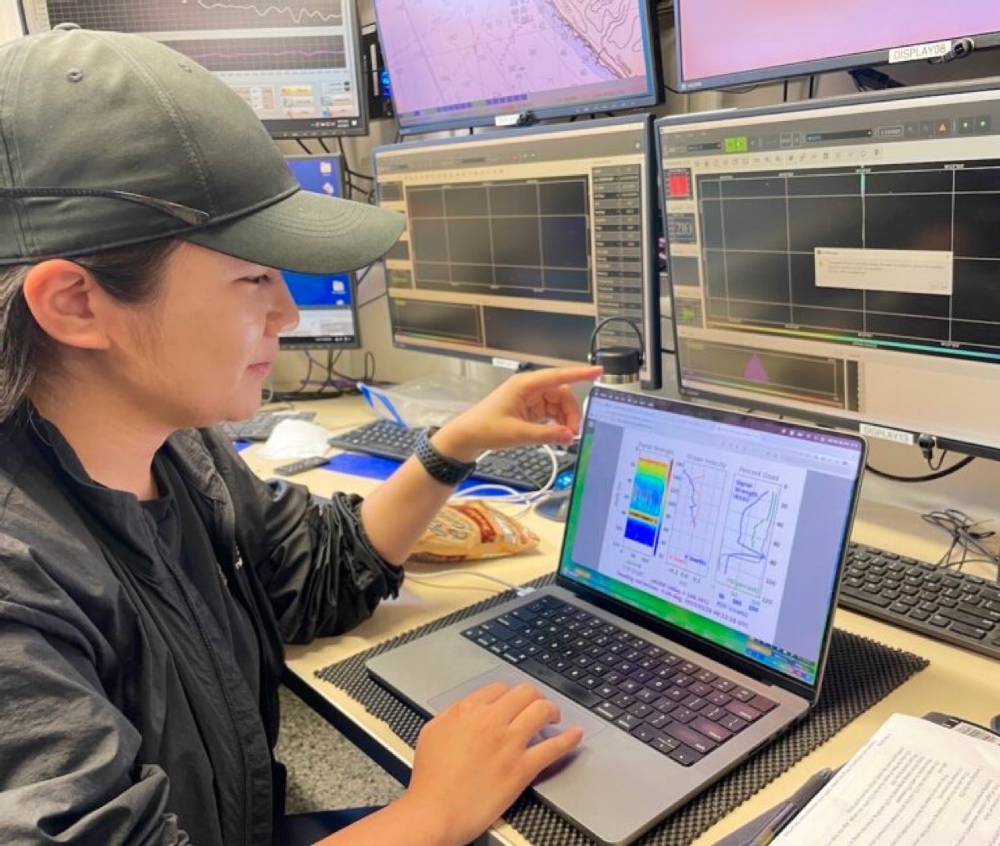

Hi! I'm Yubeen, a 3rd-year Ph.D. student in the Department of Marine Sciences at the University of North Carolina at Chapel Hill. My research revolves around understanding the complex dynamics of ocean currents, with a special focus on the Gulf Stream, one of the most influential systems in the North Atlantic. I am passionate about utilizing advanced technologies, such as high-frequency radar and underwater gliders, to monitor and analyze the long-term variability of oceanic processes. Through my work, I aim to contribute to the scientific understanding of ocean-climate interactions and their implications for coastal environments and global systems.